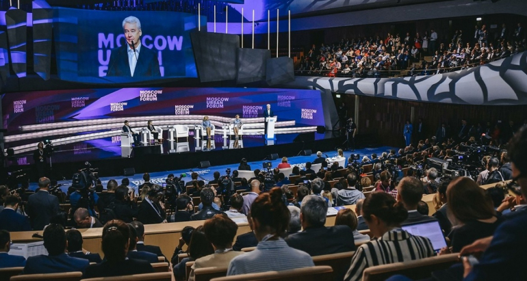

Во второй, завершающий день деловой программы Московского Урбанистического Форума 2019, состоялась панельная дискуссия «Новые городские центры. Развитие общественных пространств в мегаполисе». Принимавшие в ней участие эксперты говорили о том, как сделать современные общественные пространства доступными и инклюзивными, чтобы они не только служили площадками для досуга, но и способствовали формированию сообществ и развитию коммуникации между горожанами.
Кто такие современные города-суперзвезды? Обращаясь к астрономической терминологии, мы можем обнаружить и «голубых гигантов» — мировые столицы, десятками лет удерживающие мировое лидерство, и «суперновые» — выросшие на глазах многомиллионные мегагорода развивающегося мира, и быстро проносящиеся «кометы», вдруг становящиеся популярными благодаря той или иной своей особенности.
Амбассадор World Urban Parks Гил Пеньялоса говорил о важности подхода 8-80, при котором города должны быть одинаково удобны и безопасны как для восьмилетних детей, так и для восьмидесятилетних стариков: «Города могут быть потрясающим местом. Почему люди туда переезжают? Потому что в городах доступнее сервисы, высококачественное здравоохранение, образование, а также рабочие места. И в наши дни все больше усилий планировщиков и архитекторов направлено на то, чтобы горожане были счастливы.
Новые города имеют простую, но удобную концепцию: больше тротуаров и пешеходных пространств, общественные пространства, удобные как для молодых, так и для пожилых. И особое внимание в них должно уделяется наиболее уязвимой части населения, в первую очередь - детям. Хотя на практике мы часто сталкиваемся с тем, что предназначенная для них инфраструктура отсутствует. Поразительно, но бывает так, что собачьих площадок в городе хватает, а детских площадок недостаточно.
В наши дни средняя продолжительность жизни все продолжает увеличиваться. И с этим приходит проблема ресурса и старения населения. Пожилые люди часто чувствуют себя вычеркнутыми из жизни, как будто они уже умерли. Но на самом деле это умные и опытные люди, которые в наши дни становятся более здоровыми.
И сегодня планируя города и их общественные пространства, надо учитывать интересы как молодых, так и старых людей.
Рассказывая об американском опыте создания общественных пространств, главный дизайнер Нью-Йорка в администрации Блумберга, основатель DRAW Brooklyn LLC Александрос Уошберн говорил о том, как важно обеспечить синергию власти, дизайна и капитала.
Вспоминая историю создания знаменитого парка Хай-Лайн, открывшегося в Манхэттене в 2014 году, он обратил внимание на его историю. Девелоперы выкупили старую бездействующую железнодорожную ветку на эстакаде, чтобы снести ее и построить на этом месте здания. Но обсуждение проекта с местным сообществом и правительством города позволило найти другое решение, устроившее все стороны. Нью-Йорк выделил 100 миллионов долларов на создание общественного парка на месте старой железнодорожной ветки, и в качестве компромисса выдал девелоперам разрешение надстроить дома в районе, увеличив их этажность. Проект строительства привлек частные инвестиции в размере 3,6 миллиардов долларов.
Квартал ожил и преобразился: фасады зданий, надстроенные по проектам модных архитекторов, выглядят современно и новаторски. Квартал заполнили галлереи современного искусства, а парк попал в список 10 самых посещаемых достопримечательностей города, - от туристов нет отбоя. «То есть, проект сделан благодаря небольшому количеству государственных денег и огромному количеству частных инвестиций, - подчеркнул Александрос Уошберн. - И я отлично помню, как руководитель сказал мне в начале работы над проектом: в город не придет много частного капитала, если не будет синергии власти, капитала и дизайна. Так все и вышло: когда поступили государственные деньги, был разработан дизайн, который всем понравился, и тогда уже пришли частные деньги».